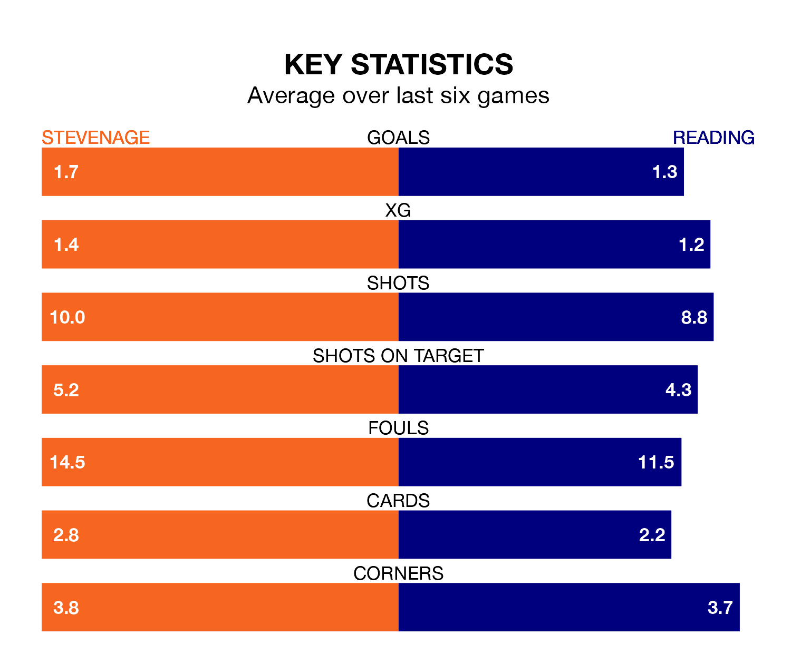

Stevenage host Reading at the Lamex Stadium on late Tuesday on the back of three consecutive wins in EFL League One.
Stevenage have picked up 12 points from their last six games, and they face a Royals side who have lost their last two matches, and collected nine points from the last possible 18.
In Jamie Reid, Stevenage have one of the league's most on-form strikers so far this season. He has notched 16 goals in 27 appearances, to sit second in the scoring charts.
His goal rate of one every 135 minutes is much quicker than that of Harvey Knibbs, Reading's top scorer with a goal every 326 minutes, and a total of seven goals in 28 games.
With 42 goals in 28 games so far this season, the Boro are scoring more than average in the league with 1.5 goals per game. And they are conceding fewer than average, letting in 27 goals at a rate of 1.0 per game.
The Royals, meanwhile, are average scorers, with 1.3 goals per game. They have conceded 1.5 goals per game.
The hosts are sixth in the table after 28 games, of which they have won 15 and drawn seven, earning 52 points.
The away team are 12 places behind Stevenage in 18th, with eight wins and eight draws putting them on 32 points.
Over the last two years, Stevenage and Reading have played each other twice. They won one each.
Their last meeting was on August 19, when Reading won 2-0 at home.
Stevenage's last match was on Saturday, a 1-0 win against Blackpool, with Jake Forster-Caskey getting the goal for the Boro.
Reading drew 1-1 with Oxford United last time out, also on Saturday, with Ciaron Brown on the scoresheet.
Tuesday's match will be refereed by Paul Howard, who has taken charge of seven EFL League One games so far this season, issuing two red cards and booking 34 players. He has not awarded any penalties.
The last Stevenage game Howard refereed was a 3-0 away loss to Blackpool on October 14. He is yet to oversee a match featuring Reading this season.
Updated: 10:01 (UTC), 06/02/24